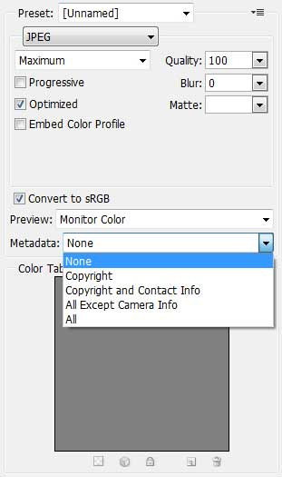

이미지 메타정보
- 색상정보가 많은 경우는 png24를 사용하고 색상정보가
적은 경우는 png8을 사용 - 포토샵툴 사용시 웹형식 저장으로 메타정보를 삭제(opt. metadata:none)
- 메타정보 확인 http://metapicz.com/#landing
JPG 이미지포맷에는 촬영기기의 모델명, 촬영일시, 노출 감도, 편집 프로그램 정보 등 그림데이타 이외의 여러 정보가 남겨집니다.
PNG 이미지포맷 역시 마지막 수정시간, 색상히스토그램, ICC 칼라 프로필, 감마값 등 그림데이타 이외의 여러 정보가 남겨집니다.
이러한 데이타를 흔히 '이미지 메타데이타(Metadata)'라고 부릅니다. 사진편집작업을 할때엔 이러한 정보가 유용하겠지만 웹서비스 UI에서 사용되는 이미지 파일은 이러한 정보를 필요로 하지 않습니다. 다시말해 불필요한 데이타인 셈이지요.
통상 20KB 정도의 용량을 차지하는 이들 메타데이타를 제거하면 이미지파일 용량이 줄어들어 웹서비스 로딩 속도가 향상될 것입니다. –NULI
툴(photoshop)에서 삭제
